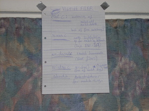

Martin Toft Bay'sGoogle Summer of Code Blog (from 2007)
Friday, August 3, 2007 What I've fixed since the previous postWelcome dear reader! I'm not using this blog as actively as I had imagined, but here is an update of what I have been fixing since last post. I link to my patches, but please don't download and try to use them. This may sound silly, as I should want people to test my patches, but there is a good reason. The patches linked to here are the patches that I've sent to Bram. Sometimes (almost always, hehe) Bram tells me that he has changed something before committing a patch, and I don't "backport" those changes to the files on this site. Unless you know what you are doing, you should wait for my patches to find their way into the official Vim repository. (They have now - search for "Toft)").
I was working on this bug when I wrote my last post, but it grew a lot bigger than planned. Five functions were implemented: matchadd(), matchdelete(), getmatches(), setmatches(), and clearmatches(). The huge patch is accessible here (43 kB). I also wrote a test for the new functionality. The patch took quite some time to complete, and to help me remember things, I started putting up paper notes on the walls of my apartment :-) Just one of those crazy moments I guess...
 On July 26 the patch was committed, after which David Larson (davidlarson at ti dot com) found a serious error in the matchadd() function. Damn that hurt :-) Even though I couldn't reproduce the error while compiling with -g (for debugging), I quickly came up with a patch on July 27. I just had to accept the fact that I'm not perfect, hehe... On July 31, that was made clear again, when it was pointed out that I had added spelling errors to Vim's otherwise perfect documentation (by the way -- thanks!).
Like many of my patches, this one leans more toward a feature addition than an error correction. Sometimes it's impossible to classify the bug reports before trying to solve them, especially when you are not a Vim power user and don't have experience with all of Vim's commands and functions. As the headline says, the patch makes the ":sort" command use the last search pattern when it is given an empty sort pattern. This allows for trying out a pattern first before using it for sorting. Example:
The patch was committed on July 10. My on-this-site version.
This was an evil bug, taking me over ten hours to find using gdb. The original bug report:
The more-prompt in action:
It turns out that the chance of experiencing this bug is high -- a lot of other key sequences besides the one mentioned trigger it, and the more-prompt is used whenever a listing doesn't fit on the screen, i.e. ":version", ":ls", ":highlight" and many others are affected. As the output for a listing will only be generated once, Vim uses a complex scroll system to remember the lines that have been generated. My patch corrects a crucial conditional in this system, which decides whether or not to show the more-prompt. Incorrectly, the more-prompt will not be shown if we are at the end of the saved scroll list part, causing a chain reaction where all lines scroll by until the bottom is reached. The patch still awaits commit.
Before attacking this bug, I didn't even know that Vim had thesaurus capabilities :-) Just set the 'thesaurus' option to a file containing lines with synonymous words and you're up and running. Type <ctrl-x><ctrl-t> to query the thesaurus. See ":help 'thesaurus'" for more information. Unfortunately, the thesaurus doesn't work properly when 'infercase' set. If you want to try any of the following, remember to also set 'ignorecase', as 'infercase' depends on it. I have a simple one-line thesaurus with "angry furious mad enraged". Typing Ang<ctrl-x><ctrl-t> gives some broken suggestions:
After some code reading and debugging, I found out that the case of the suggestions' first part was inferred by simply copying the typed part ("Ang"). This is fine for ordinary word completion but wrong for thesaurus completion. I wrote a small, simple patch fixing the problem and sent it to Bram. Bram quickly responded with something like "but your patch doesn't support multi-byte characters!". The truth is that I intentionally didn't make a multi-byte supporting patch, as the whole 'infercase' feature didn't support it, so it wouldn't matter whether my small contribution did. The relevant function had this fine comment: ... * TODO: make this work for multi-byte characters. */ I felt, however, that I had to do the job properly and decided to make the whole thing work for multi-byte characters. As we say in Danish: "Det er det de unge vil ha!" ("That's what the youth demands!"). This turned out to be a completely new experience for me, as I hadn't used a multi-byte character set on any of my computers before. The patch is available here. It hasn't been committed yet. With the patch applied, 'infercase' of thesaurus completion is now correct:
While messing around with the thesaurus, I found another annoying bug on my own. In the line of a thesaurus file, only the word matching the typed part and the ones after it are suggested. Here is an example where I have the line "angry furious mad enraged" again, but "angry" is not suggested when typing fur<ctrl-x><ctrl-t>:
The problem was simple to patch -- I just changed the line scanning to begin from the start of the line. With the patch applied:
Like the other thesaurus patch, my patch for this problem hasn't been committed yet.
When writing a file, the 'bomb' option of Vim specifies whether a so-called BOM should be prepended. BOM is an abbreviation for "Byte Order Mark", and it is used by some applications to recognise the encoding of a file. The bug report was
and I have fixed it just like report suggests. If a user changes the 'bomb' option to the opposite value of what it was when a file was opened, the file will be marked as modified. The patch hasn't been committed yet.
The bug report was
which is clear at this screen shot:
Yeah, that's one thing, I thought, but shouldn't the completion suggestions also be in 'rightleft' style? What you see should be what you get, I think, to borrow some words from an otherwise annoying phrase. So besides fixing the original position bug, I decided to also make the completion menu appear in 'rightleft' style when the 'rightleft' option is set. The "pleasing" result of this:
It wasn't a very complicated patch to do, but it took some time, as the 'rightleft' menu style is new functionality. I couldn't just set a magic variable to a particular value to make it happen. Code was indeed needed together with a little portion of ingenuity for the special cases with regard to the menu's position. Also, I had to make sure that I didn't ruin the original code for the ordinary (in my eyes) menu style and position. If you want to try out the 'rightleft' option, you have to compile the "big" version of Vim, as it isn't included in the "normal" version. See ":help :version" and the makefile for more information. The patch is available here. It hasn't been committed yet.
This one was really hard to crack and took me nearly 20 hours in front of gdb. Maybe this is the time to mention a few nice features of gdb :-) I particularly enjoy being able to run gdb in one window and the program being debugged in another. Otherwise, the user interface of Vim would clutter the debugging info completely, and certain user interface related bugs would be impossible to debug. One way to do this is to use gdb's -tty option, but you can also start debugging a running process by specifying its PID. I used this handy guide to refresh my knowledge about gdb. See "man gdb" for more information. By following a recipe sent to the Vim users maillist by Ming Bai and mbbill on July 24 (thanks!), one can end up with the following window layout in Vim:
I have also written a version of the recipe in my patch for the problem. It's hard to spot what's wrong with the layout, if you don't already know it. Three windows are shown:
Note the "+6" for the Quickfix List -- it overlaps the "[No Name]" window above it! Readers familiar with Vim should know that its windows aren't supposed to overlap :-) The overlapping results in a lot of layout problems down the road, as Vim doesn't account for overlapping windows when calculating the placement of objects such as the command line. Example: The row below the last window's frame (row 17 here due to the Quickfix List being last) is used for the command line, which is clear if you use the recipe to get into the faulty situation and type a colon. The problem is caused by a too simplistic solution for distributing free height and width from a closed window to a neighbour window, when 'winfixheight' or 'winfixwidth' is involved. Actually, the comment before the relevant code hints it (window.c lines 2332-2334): /* When 'winfixheight' is set, remember its old size and restore * it later (it's a simplistic solution...). Don't do this if the * window will occupy the full height of the screen. */ When doing the last step of the recipe (closing the window containing bb.txt), the solution is triggered. Before reaching the solution's code, the Quickfix List has been chosen to get the height from the old window. The solution then adds the height to the frame of the Quickfix List (and thereby also to its window), but then explicitly sets the window's height back to its original value, as the Quickfix List has 'winfixheight' set. This brings the frame height and window height out of sync, which causes havoc later on when the column's frames and windows are adapted to each other. I have fixed the problem by writing a smarter solution for dealing with windows that have 'winfixheight' or 'winfixwidth' set. It searches the column/row (depending on whether we're dealing with height or width) for a non-fixed-size window to distribute the height/width to, and only chooses the fixed-size window if no non-fixed-size window could be found. It tries to pick a window as close to the closed window as possible. Now the recipe can no longer cause problems:
The patch still awaits commit.
All posts
2007-08-03 - What I've fixed since the previous post |

{kind=link}